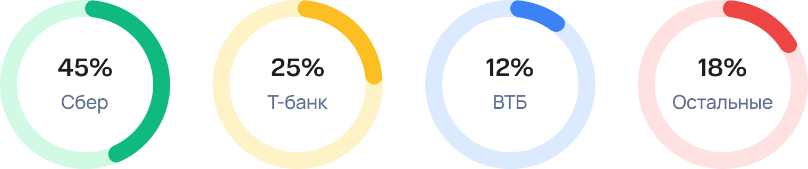
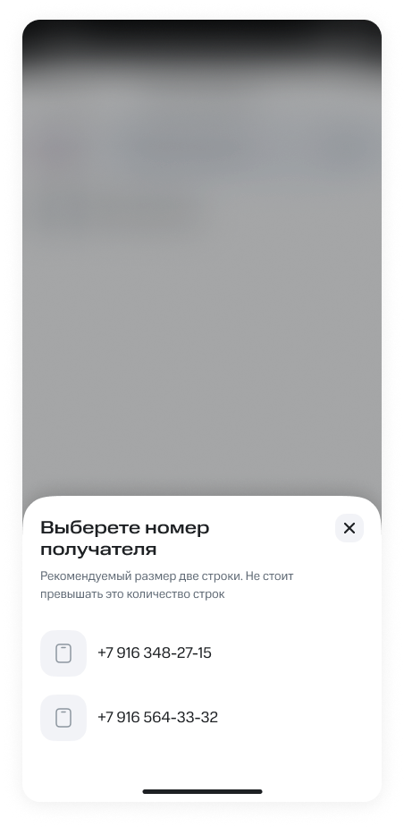
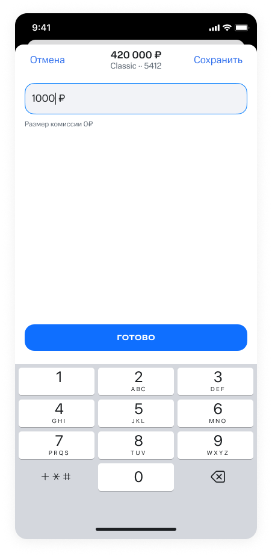
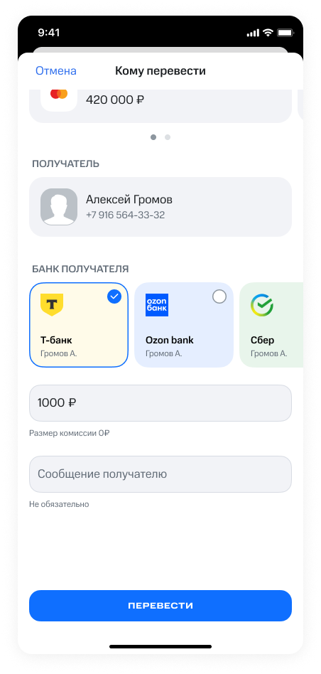
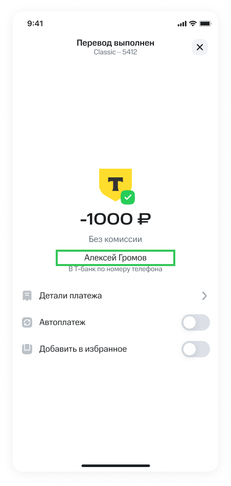
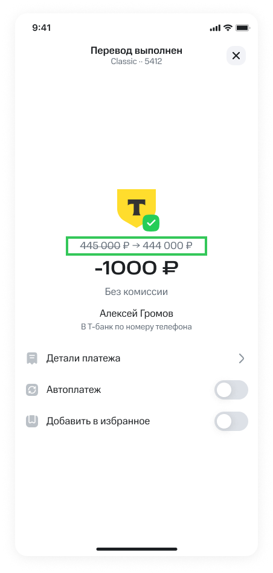
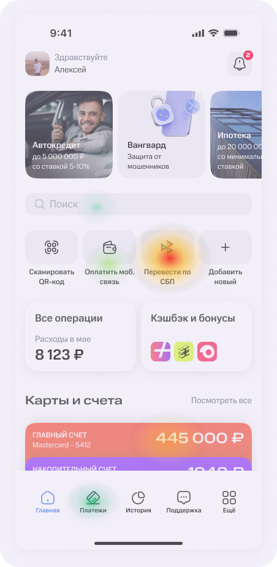

О проекте
Задача
Спроектировать сценарий денежных переводов, связав бизнес-цель — за 6 месяцев привлечь 10 000 ежедневных пользователей — с реальными потребностями аудитории.
Моя роль
Я отвечал за весь путь: изучил рынок, спроектировал сценарий, собрал визуальное решение и проверил гипотезы на пользователях.
Кабинетное исследование: рынок и ожидания пользователей
Без доступа к аналитике я собрал данные из открытых источников — новостей, обзоров, отчётов и форумов. Так я изучил устройство рынка, выделил повторяющиеся закономерности и выяснил, что для пользователей важно, чего они опасаются и почему одни банки оказываются сильнее других.
Финтех рынок


Что пользователи ценят:
1. Понятный интерфейс и нужные функции.
2. Быстрые переводы между счетами.
3. Оплата услуг без комиссии.
4. Понятная история операций.
5. Оперативная поддержка в чате.
Что вызывает критику:
1. Технические ошибки и зависания.
2. Сложная и перегруженная навигация.
3. Сбои авторизации, особенно после обновлений.
4. Навязчивые предложения дополнительных услуг.
5. Медленная работа приложения.
Ключевые выводы из исследования рынка
Рынок сосредоточен у двух крупных игроков — на них приходится 70%. Поэтому я решил не повторять их решения, а объединить сильные стороны лидеров: скорость Т‑банка и охват Сбера — с собственной ценностью.
Три условия сильного сценария — скорость, безопасность и связь с экосистемой. Особенно это важно для переводов денежных средств.
Санкции и исчезновение приложений из магазинов напрямую снижают ощущение безопасности. Поэтому при проектировании сценария важно усиливать защиту и предсказуемость — это помогает уменьшить тревожность пользователей.
Поведенческие группы пользователей
Глубинные интервью показали: возраст и цифровая грамотность различаются, но всех пользователей объединяет один базовый страх — ошибиться и потерять деньги. По итогам интервью я выделил ключевые барьеры и мотиваторы в сценарии денежных переводов.
Активный пользователь
Барьер
Медленная работа, перегруженный интерфейс и неясные процессы. Если для платежа нужны подтверждения в сторонних приложениях или возникают ошибки, активный пользователь воспринимает это как признак ненадёжности и слабой безопасности.
Мотиватор
Скорость и эффективность. Для него банковское приложение — рабочий инструмент, который экономит время в повседневных задачах. Он ценит контроль, прозрачность и универсальность.
Ситуативный пользователь
Барьер
Сложный и перегруженный интерфейс, непонятная логика действий и страх нажать не туда и потерять деньги. Если приложение или операция зависает, нестабильность усиливает стресс вдвое.
Мотиватор
Безопасность и предсказуемость. Он открывает приложение только по необходимости и для простых операций, поэтому новые функции могут его пугать. Ему важны понятный интерфейс, стабильная работа и предсказуемый результат.
Ключевые выводы глубинных интервью
Один сценарий должен учитывать обе группы: активным пользователям нужна скорость, а ситуативным — ощущение безопасности и простоты. Успех зависит от того, насколько хорошо продукт совмещает эти потребности.
Дизайн должен снижать тревожность на каждом шаге: перевод денег обязан быть не только быстрым, но и понятным, простым и предсказуемым.
Сила привычки выше ожидаемой: ситуативные пользователи с трудом принимают новые паттерны. Поэтому более удобные решения нужно вводить постепенно, не разрушая знакомую логику.
User Flow
Перевод — это не набор экранов, а последовательность действий и решений пользователя. Поэтому я учитывал не только шаги сценария, но и контекст: открыт ли счёт, хватает ли средств и разрешён ли доступ к контактам.

Сам сценарий
Перевод денег — это цепочка шагов, в которой легко ошибиться или остановиться. Если сократить лишние переходы, можно ускорить прохождение сценария, повысить удержание и увеличить число успешных переводов. Моя гипотеза: вынести кнопку «Перевести» на главный экран, чтобы пользователь сразу переходил к выбору получателя. В следующих шагах я добавил частые контакты, выбор счёта и встроенный калькулятор.


Нажимает на кнопку "перевести по СБП"
Здесь отображаются получатели, которым клиент чаще всего переводит деньги — от самых частых к более редким.
Вводит номер телефона
По мере ввода номера система предлагает подходящие контакты.
Нажимает на предложенного пользователя
После выбора контакта открывается лист с его номерами. Сиреневый значок банка показывает, что к номеру привязан счёт в нашем банке.
Нажимает на номер
Нажимает на поле суммы
Вводит сумму и готово
Нажимает на кнопку "перевести"
Если пользователь начал перевод с главного экрана, кнопка ведёт обратно на него, а не в раздел «Платежи».
Что показало качественное тестирование
Я провёл качественный тест кликабельного прототипа на двух персонах. Тест показал, что кнопку «Перевести» на главном экране пользователи находят и выбирают. Одновременно выявились три проблемы: непонятный значок «₽», лишний или пугающий калькулятор и позднее отображение комиссии.
Какие вопросы я проверял
1. Какой путь пользователь выбирает для перевода денег по номеру телефона? 2. На каком шаге возникают барьеры при таком переводе? 3. Как пользователь проходит сценарий от начала до завершения?

После


Инсайт: обозначения в интерфейсе понятны не всем пользователям.
"после этого я бы узнала, какой у него номер телефона. А вот эта «иконка» — она что обозначает?" — ситуативный пользователь
"тут я, получается, выбираю номер, куда отправлять... ну вот допустим, у человека два номера, я-то уже заранее знаю, на какой именно кидать, мы же давно общаемся, я в курсе, куда он принимает переводы. Тут можно нужный выбрать. только я вообще не понимаю, что означает эта «иконка в синем квадрате»" — активный пользователь

После


Инсайт: большинству пользователей не нужен встроенный калькулятор.
"калькулятор вообще не использую я сразу ввожу нужную сумму. даже не припомню, когда он мне понадобился... разве что когда с компанией куда-то собираешься, там удобно разделить счёт через калькулятор на телефоне, ну в обычном, встроенном. получается сперва считаешь на калькуляторе, а потом уже идёшь делать перевод." — ситуативный пользователь
"нет, калькулятор я трогать не стану потому что проще сразу ткнуть в поле для суммы, оно же большое, а кнопка калькулятора маленькая, в неё ещё попасть надо, мне проще просто нажать на само поле ввода и сразу вписать сколько нужно" — активный пользователь

После


Инсайт: комиссию за перевод важно показывать до подтверждения.
"ну тут комиссия станет известна после заполнения реквизитов платежа. Но подождите, я же реквизиты уже указала? И при этом сумма комиссии так и не обновилась." — ситуативный пользователь
"сейчас я вижу, что перевод прошёл без комиссии. ну да, вижу что комиссии нет. только это, честно говоря, немного неприятно, ведь хочется заранее до отправки понимать, будет комиссия или нет." — ситуативный пользователь

После


Инсайт: названия действий после операции могут быть неоднозначными.
"ну и дальше я вижу, что тут можно заказать документы по операции, сохранить в избранное. Вот с избранным я теряюсь: что конкретно сохраняется? сам перевод Ивану Сергееву? Как потом это избранное будет выглядеть? А вот автоплатёж — тут всё ясно. Ну потому что можно настроить, чтобы каждый год в тот же день автоматически уходил перевод Сергею." — активный пользователь

После


Инсайт: на экране успеха пользователи хотят видеть новый остаток по счёту.
"ну вот я вижу, что деньги списались, но остаток на счёте нигде не показан. я бы наверное хотел видеть итоговый баланс ну понятно что суммы тут небольшие, но в целом для меня как для пользователя было бы полезно это видеть." — активный пользователь
Ключевые уроки этого этапа
Знакомый путь часто выигрывает у более логичного: в стрессовом сценарии не стоит резко менять привычные действия. Новые, более выгодные варианты нужно вводить постепенно.
Прозрачность снижает тревогу: скрытая комиссия и непонятные обозначения усиливают стресс. На каждом шаге пользователь должен видеть, что происходит и что будет дальше.
Гипотеза требует проверки: даже обоснованное решение, например встроенный калькулятор, может оказаться лишним. Качественный тест помогает понять не только, работает ли функция, но и нужна ли она пользователю.
Количественная проверка точки входа
Я провёл тест первого клика, чтобы проверить гипотезу о кнопке на главном экране. Участникам показывали главный экран и просили начать перевод другу; я фиксировал, выберут ли они новую кнопку «Перевести» или привычный путь через «Платежи». Гипотеза подтвердилась: кнопку выбирали от 60% до 100% участников. При этом часть пользователей пыталась начать перевод со страницы накопительного счёта, не используя ни один из двух вариантов.
Цель для продукта
Привлечь новых пользователей и удержать текущих за счёт более удобного пользовательского опыта.
Цель исследования
Понять, откуда пользователи начинают перевод денежных средств.
Вопрос исследования
Какую точку входа пользователи выбирают чаще: Tab Bar или кнопку «Перевести» на главном экране.
Проверяемая гипотеза
Гипотеза: более 50% респондентов выберут первым шагом кнопку «Перевести» на главном экране, когда нужно отправить деньги.
Финальная версия сценария
По итогам тестирования я вынес кнопку «Перевести» на главный экран: от 60% до 100% пользователей выбирают её вместо входа через нижнюю навигацию. Это сокращает путь к переводу и упрощает пользовательский опыт. Доверительный интервал: ±20% Размер выборки: 15 Генеральная совокупность: 10 000 000 Выборка: активные и ситуативные пользователи банковских приложений, которые минимум раз в неделю переводят деньги другим пользователям и используют несколько банковских приложений.


Ключевые выводы количественной проверки
Гипотеза подтвердилась: более 60% пользователей выбирают самый короткий путь. Поэтому вынести кнопку «Перевести» на главный экран — обоснованное решение.
Даже подтверждённая гипотеза не охватывает всех пользователей. Выбор счёта показывает, что привычные паттерны трудно менять, даже если новый путь удобнее. В финальном дизайне стоит рассмотреть карты и счета как дополнительные точки входа.
Точные данные помогли перейти от предположений и качественных наблюдений к решению, которое можно уверенно обсуждать с бизнесом и разработкой.
Решение после проверки данных
Я сохранил привычный путь и добавил более быструю альтернативу — кнопку «Перевести» на главном экране. Скорость оказалась общей потребностью пользователей: новый вход сокращает путь и со временем станет новой привычкой, помогая достигать бизнес-целей.
Что подтвердил количественный тест
От 60% до 100% пользователей выбирают кнопку «Перевести» на главном экране вместо точки входа в нижней навигации. Значит, такой путь сокращает сценарий и делает пользовательский опыт быстрее.
Что показал качественный тест
Пока отказываемся от кнопки «Калькулятор» и значка «Э» при выборе номера получателя, а комиссию показываем уже на этапе ввода суммы. Тест показал: некоторые пользователи опираются на устойчивые привычки, и даже более длинный путь сложно быстро заменить.
Что я вынес из проекта
Самый сложный этап
Сложнее всего для меня оказалась не аналитика и не тесты, а тщательная работа с визуальной частью — область, в которой у меня было меньше опыта. Работа с деталями помогла понять мою сильную сторону: не идеальная отрисовка, а умение слышать рынок, пользователей и продуктовую логику, а затем находить обоснованные решения.
Что изменилось в моём подходе
Главный урок финтех-дизайна: психология пользователя часто важнее формальной логики. Я научился собирать и проверять информацию, а затем превращать её в решения, которые работают с реальными привычками и страхами. Именно так создаётся ценность финансового продукта.
Момент, который запомнился
Работая над визуальным стилем, я выбрал фиолетовую и оранжевую палитру — они не ассоциировались у меня с другими банками — и согласовал её с куратором. Через пару недель я увидел интервью вице-президента «Уралсиба», которое подтвердило это направление. Тогда я понял: моя сильная сторона не только в интерфейсах, но и в умении слушать, анализировать, задавать вопросы и пересматривать решения.